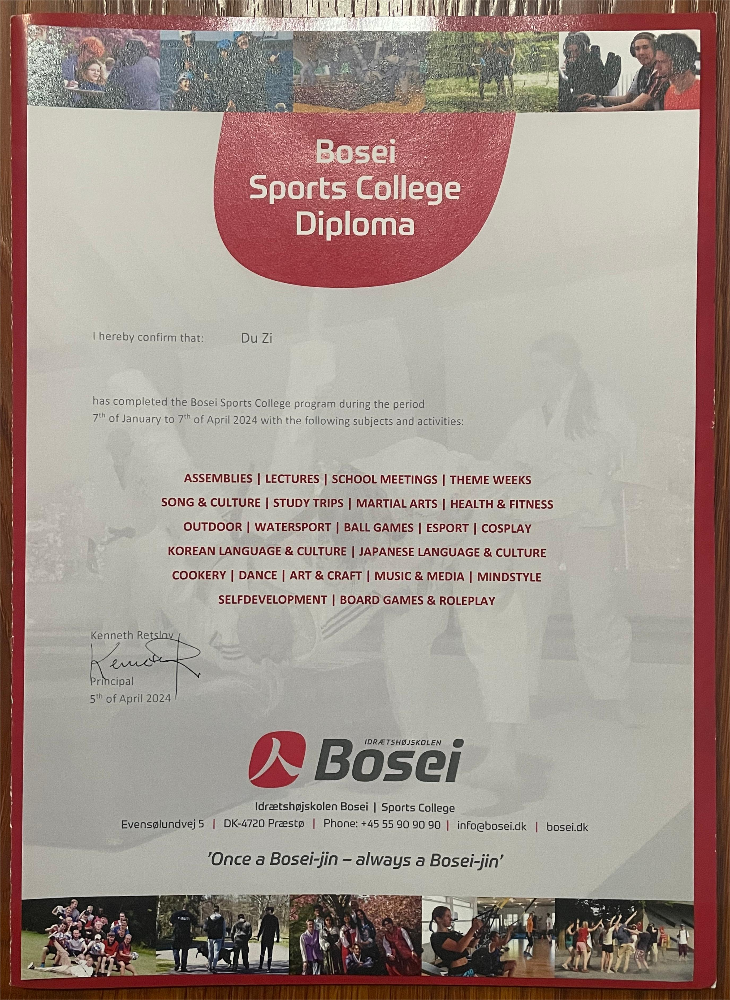
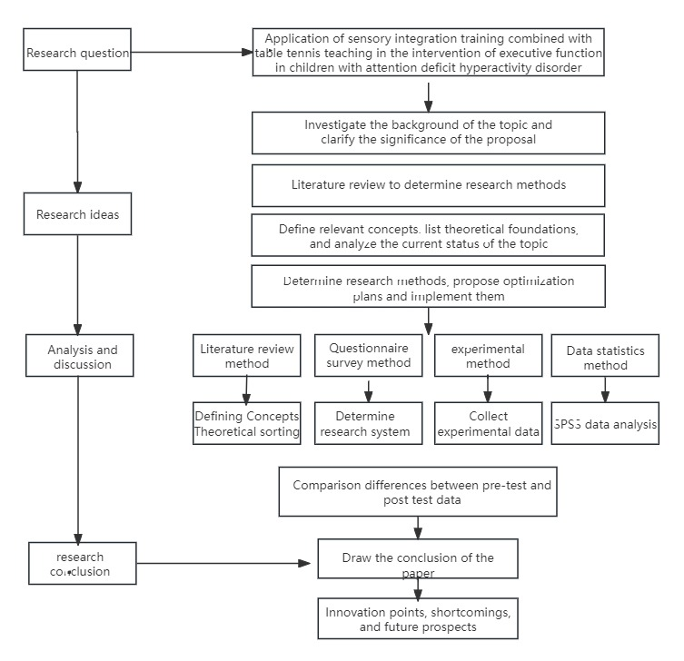
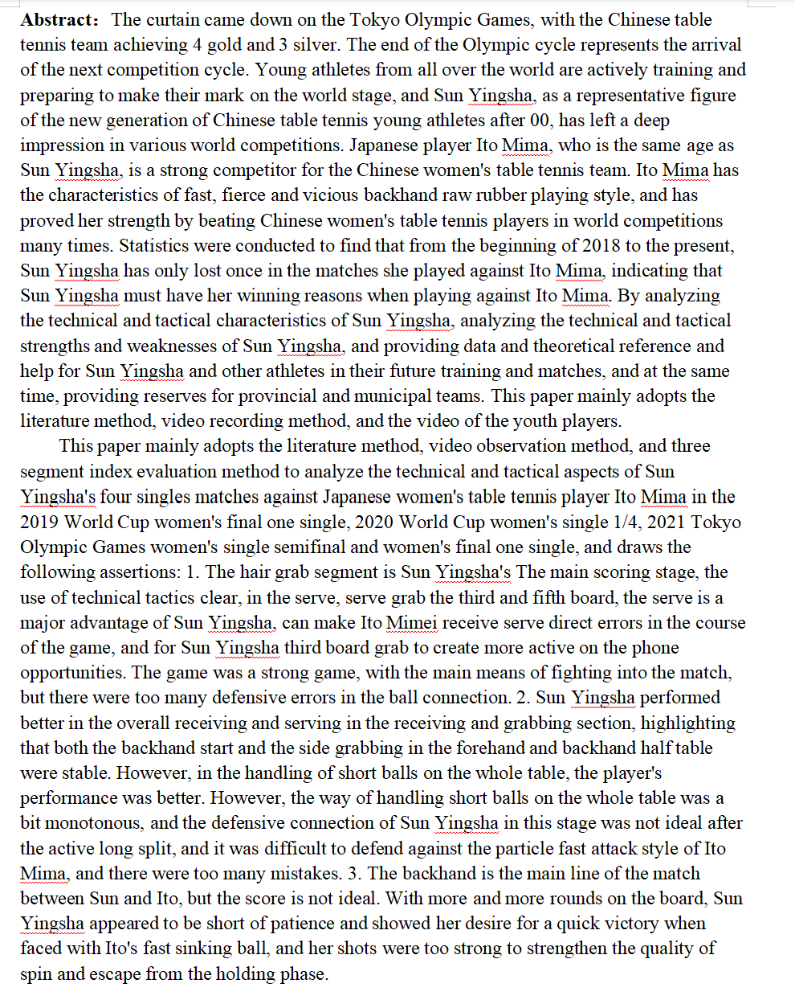
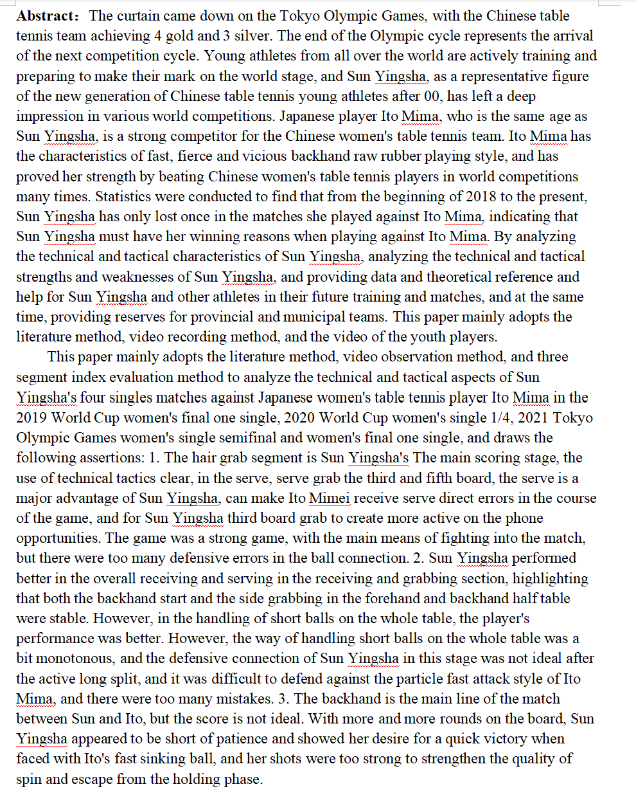

Du Zi
About Me
I am a Master student at Wuhan Sports University,my major is Phycical Education and Sports Training
Research Interests
- Research on the Application of Sports Intervention : Sensory training, ADHD, Autism children
- Technical and tactical analysis and research on countermeasures: Three stage analysis method, Excellent table tennis players from China and foreign countries
Awards
- [Sept. 2017] The second prize of women's doubles in Hubei Table Tennis Championships
- [Mar. 2015] China table tennis South Division women's team top eight
Research or work experience
-
 DenmarkInternational Conference on Medical Image Computing and Computer-Assisted Intervention (MICCAI), 2024.
-
 Master ThesisExercise intervention for 60 children with ADHD, innovating and supplementing traditional sensory training (CVPR), 2024.
-
 Germany
Studied 6 theoretical areas such as sports tourism and leisure sports, obtained a graduation certificate from the training program (CVPR), 2023. Bachelor Thesis
Germany
Studied 6 theoretical areas such as sports tourism and leisure sports, obtained a graduation certificate from the training program (CVPR), 2023. Bachelor ThesisOther skills
Other skills
National Level one table tennis player National table tennis referee II Visual tracking of moving targets: progress and prospects in static eye research Exercise intervention plan and effectiveness evaluation for adolescent depression Solving the Psychological Development Problems of Coaches and Athletes Research on Innovation of Talent Training Model for Master's Degree Students in Physical Education Teaching Research on the Application of Sports Transfer Theory in Table Tennis Training The Importance, Necessity, Basic Principles, and Dilemmas of Technical Ethics Construction Analysis of Body Composition and Physical Activity Status of Retired Table Tennis Female Athletes
Powered by Jekyll and Minimal Light theme.